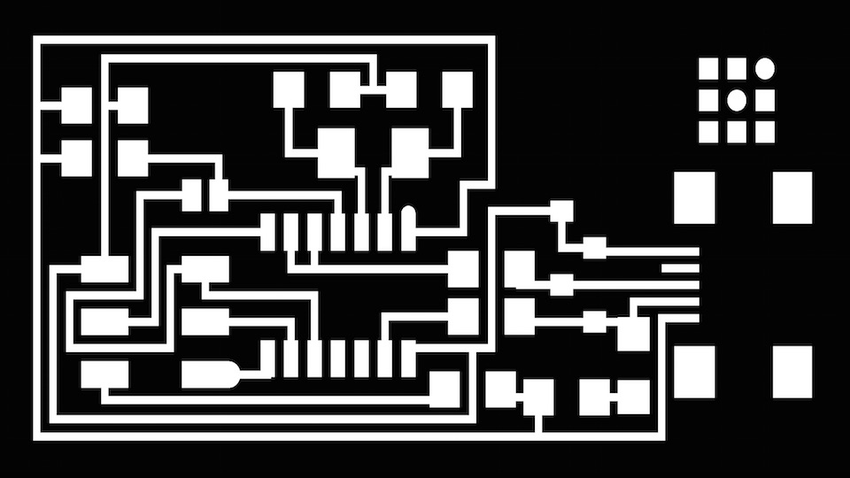
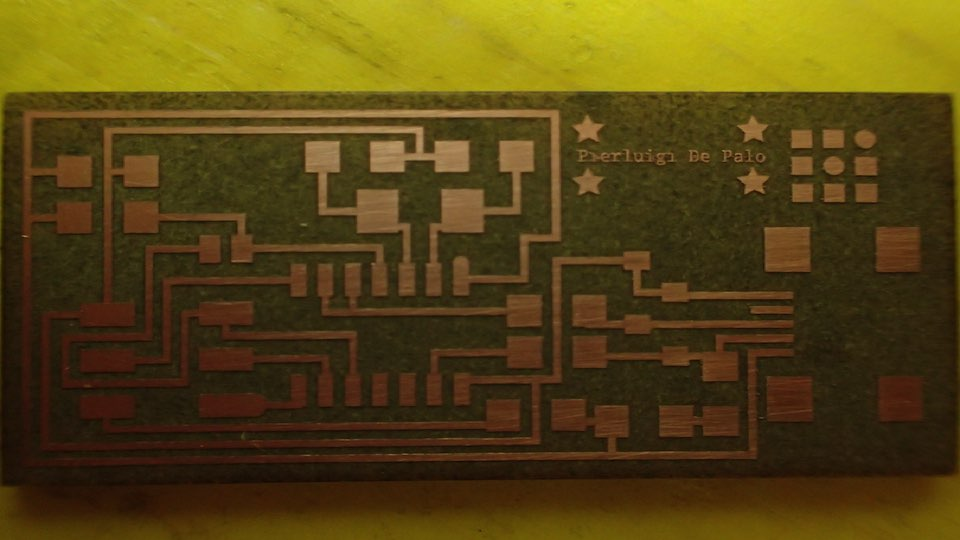
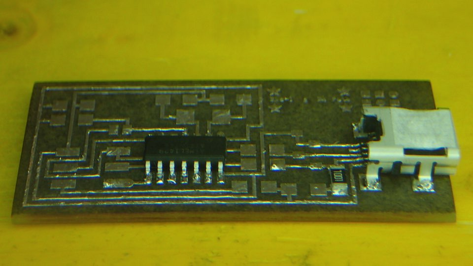

****************************************************************************************************************
ASSIGNMENT: MILL (LASER !) THE BOARD // STUFF IT WITH COMPONENTS // PROGRAM IT
TUTORIAL: FAB ISP PRODUCTION TUTORIAL // FAB ISP PROGRAMMING TUTORIAL
MACHINE: TROTEC SPEEDY 100 FLEXX
SUPPORT: CIRCUIT BOARD BLANC FR-1
****************************************************************************************************************
PART 1 --> LASER ENGRAVING THE BOARD (next part in week 6)
To create our Fab Isp Boards here in OpenDot, instead of using the classic milling process, we try to used the TROTEC SPEEDY 100 FLEXX laser cutter machine to engrave the pcb board.
The Trotec Speedy 100 have 2 different type of laser :
---> The first one is a CO2 Laser Source
---> The second one is a Fiber Laser.
The Fiber Laser have a natural physic frequence, that is not reflected by the metal, like the CO2 laser source.
So this source, give us the possibility to try to engrave the metal for doing our PCB.
For more details about this process, I invite you to look the development page of our classmate Enrico Bassi who is the developer of this process.


 Software Trotec Settings
Software Trotec Settings
--> CONCLUSIONS
As you can see the process of creation of the board through laser engraving works rather well.
It's good but not perfect.
I want you all to note, that the text of my name is made with 2 pixels dimension lines
For the next set we will try to do 7 pass of Fiber Laser engraving
PART 2 --> ELECTRONICS COMPONENT SOLDERING
After download the FabISP Labeled Board, I followed the diagram for solder the components and place them on the board.


The first step that i do, is to use solder to covered all circuit traces of my board.
This process is for make the solder process more simple.
It's also a process that makes the circuit bright and similar to a jewel.
Subsequently I have proceeded to the assemblage of all the components, following the FabISP Labeled Board
- n. 1 ATTiny 44 microcontroller
- n. 1 Capacitor 1uF
- n. 2 Capacitor 10 pF
- n. 2 Resistor 100 ohm
- n. 1 Resistor 499 ohm
- n. 1 Resistor 1K ohm
- n. 1 Resistor 10K
- n. 1 6 pin header
- n. 1 USB connector
- n. 2 jumpers (1 soldering bridge and 1 0 ohm resistor)
- n. 1 Cystal 20MHz
- n. 2 Zener Diode 3.3 V
- n. 2 6 pin connectors


PART 3 --> PROGRAMMING THE BOARD
For programming a Fab ISP we need:
- Another ISP or Arduino Microcontroller
- Avrdude--> for programming AVR microcontrollers
- GCC --> to compile in C code
- Download the FabISP firmware from the Fab Academy Tutorial page
Connect Arduino and FabISP following the diagram below:
| Signal | FabISP | ArduinoUNO |
| MISO | 1 | 12 |
| VCC | 2 | 5V |
| SCK | 3 | 13 |
| MOSI | 4 | 11 |
| RESET | 5 | 10 |
| GND | 6 | GND |
--> EDIT THE MAKEFILE
Once connected the two boards, we need edit the Makefile : once opened, like a text file, remove the "#" in the line with "usbtiny" and add a "#" in the line with the "avrisp2"
"..........
DEVICE = attiny44
#F_CPU = 12000000 # edit this line for crystal speed, in Hz
F_CPU = 20000000 # edit this line for crystal speed, in Hz
FUSE_L = 0xFF
FUSE_H = 0xDF
AVRDUDE = avrdude -c usbtiny -p $(DEVICE) # edit this line for your programmer
#AVRDUDE = avrdude -c avrisp2 -P usb -p $(DEVICE) # edit this line for your programmer
........."
--> MAKE CLEAN /// MAKE HEX // MAKE COMMAND // SUDO MAKE FUSE// SUDO MAKE COMMAND
Open the terminal and go to the directory where you put the firmware file : compile the firmware using the follow commands :
--> MAKE CLEAN
Pierluigi-MacBook-Pro:fabISP_mac.0.8.2_firmware Pierluigi$ make clean
rm -f main.hex main.lst main.obj main.cof main.list main.map main.eep.hex main.elf *.o usbdrv/*.o main.s usbdrv/oddebug.s usbdrv/usbdrv.s
--> MAKE HEX
Pierluigi-MacBook-Pro:fabISP_mac.0.8.2_firmware Pierluigi$ make hex
rm -f main.hex main.lst main.obj main.cof main.list main.map main.eep.hex main.elf *.o usbdrv/*.o main.s usbdrv/oddebug.s usbdrv/usbdrv.s
Pierluigi-MacBook-Pro:fabISP_mac.0.8.2_firmware Pierluigi$ make hex
avr-gcc -Wall -Os -DF_CPU=20000000 -Iusbdrv -I. -DDEBUG_LEVEL=0 -mmcu=attiny44 -c usbdrv/usbdrv.c -o usbdrv/usbdrv.o
avr-gcc -Wall -Os -DF_CPU=20000000 -Iusbdrv -I. -DDEBUG_LEVEL=0 -mmcu=attiny44 -x assembler-with-cpp -c usbdrv/usbdrvasm.S -o usbdrv/usbdrvasm.o
avr-gcc -Wall -Os -DF_CPU=20000000 -Iusbdrv -I. -DDEBUG_LEVEL=0 -mmcu=attiny44 -c usbdrv/oddebug.c -o usbdrv/oddebug.o
avr-gcc -Wall -Os -DF_CPU=20000000 -Iusbdrv -I. -DDEBUG_LEVEL=0 -mmcu=attiny44 -c main.c -o main.o
main.c:88:13: warning: always_inline function might not be inlinable [-Wattributes]
static void delay ( void )
^
avr-gcc -Wall -Os -DF_CPU=20000000 -Iusbdrv -I. -DDEBUG_LEVEL=0 -mmcu=attiny44 -o main.elf usbdrv/usbdrv.o usbdrv/usbdrvasm.o usbdrv/oddebug.o main.o
rm -f main.hex main.eep.hex
avr-objcopy -j .text -j .data -O ihex main.elf main.hex
avr-size main.hex
text data bss dec hex filename
0 1988 0 1988 7c4 main.hex
--> SUDO MAKE FUSE
Pierluigi-MacBook-Pro:fabISP_mac.0.8.2_firmware pierluigi$ sudo make fuse
avrdude -c stk500v1 -P /dev/tty.usbmodem1421 -b19200 -p attiny44 -U hfuse:w:0xDF:m -U lfuse:w:0xFF:m
avrdude: AVR device initialized and ready to accept instructions
Reading | ################################################## | 100% 0.05s
avrdude: Device signature = 0x1e9207
avrdude: reading input file "0xDF"
avrdude: writing hfuse (1 bytes):
Writing | ################################################## | 100% 0.02s
avrdude: 1 bytes of hfuse written
avrdude: verifying hfuse memory against 0xDF:
avrdude: load data hfuse data from input file 0xDF:
avrdude: input file 0xDF contains 1 bytes
avrdude: reading on-chip hfuse data:
Reading | ################################################## | 100% 0.02s
avrdude: verifying ...
avrdude: 1 bytes of hfuse verified
avrdude: reading input file "0xFF"
avrdude: writing lfuse (1 bytes):
Writing | ################################################## | 100% 0.02s
avrdude: 1 bytes of lfuse written
avrdude: verifying lfuse memory against 0xFF:
avrdude: load data lfuse data from input file 0xFF:
avrdude: input file 0xFF contains 1 bytes
avrdude: reading on-chip lfuse data:
Reading | ################################################## | 100% 0.02s
avrdude: verifying ...
avrdude: 1 bytes of lfuse verified
avrdude: safemode: Fuses OK (E:FF, H:DF, L:FF)
avrdude done. Thank you.
--> SUDO MAKE PROGRAM
Pierluigi-MacBook-Pro:fabISP_mac.0.8.2_firmware pierluigi$ sudo make program
avrdude -c stk500v1 -P /dev/tty.usbmodem1421 -b19200 -p attiny44 -U flash:w:main.hex:i
avrdude: AVR device initialized and ready to accept instructions
Reading | ################################################## | 100% 0.05s
avrdude: Device signature = 0x1e9207
avrdude: NOTE: "flash" memory has been specified, an erase cycle will be performed
To disable this feature, specify the -D option.
avrdude: erasing chip
avrdude: reading input file "main.hex"
avrdude: writing flash (1988 bytes):
Writing | ################################################## | 100% 3.41s
avrdude: 1988 bytes of flash written
avrdude: verifying flash memory against main.hex:
avrdude: load data flash data from input file main.hex:
avrdude: input file main.hex contains 1988 bytes
avrdude: reading on-chip flash data:
Reading | ################################################## | 100% 2.26s
avrdude: verifying ...
avrdude: 1988 bytes of flash verified
avrdude: safemode: Fuses OK (E:FF, H:DF, L:FF)
avrdude done. Thank you.
avrdude -c stk500v1 -P /dev/tty.usbmodem1421 -b19200 -p attiny44 -U hfuse:w:0xDF:m -U lfuse:w:0xFF:m
avrdude: AVR device initialized and ready to accept instructions
Reading | ################################################## | 100% 0.05s
avrdude: Device signature = 0x1e9207
avrdude: reading input file "0xDF"
avrdude: writing hfuse (1 bytes):
Writing | ################################################## | 100% 0.02s
avrdude: 1 bytes of hfuse written
avrdude: verifying hfuse memory against 0xDF:
avrdude: load data hfuse data from input file 0xDF:
avrdude: input file 0xDF contains 1 bytes
avrdude: reading on-chip hfuse data:
Reading | ################################################## | 100% 0.02s
avrdude: verifying ...
avrdude: 1 bytes of hfuse verified
avrdude: reading input file "0xFF"
avrdude: writing lfuse (1 bytes):
Writing | ################################################## | 100% 0.02s
avrdude: 1 bytes of lfuse written
avrdude: verifying lfuse memory against 0xFF:
avrdude: load data lfuse data from input file 0xFF:
avrdude: input file 0xFF contains 1 bytes
avrdude: reading on-chip lfuse data:
Reading | ################################################## | 100% 0.02s
avrdude: verifying ...
avrdude: 1 bytes of lfuse verified
avrdude: safemode: Fuses OK (E:FF, H:DF, L:FF)
avrdude done. Thank you.